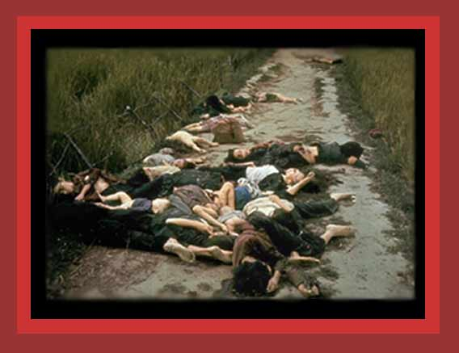

| During the Vietnam War, American forces may have murdered as many as 68,500 Vietnamese, Laotians, and Cambodians from indiscriminant bombing, and an addtiona some 1,500 people in massacres and atrocities on the ground. Some of the Vietnamese murdered in the village of Mylai, the most notorious example, are shown here. For documentation, see Statistics of Democide. Source: "The Massacre at Mylai". Photograph by Ronald L. Haeberle (c) Time Inc |